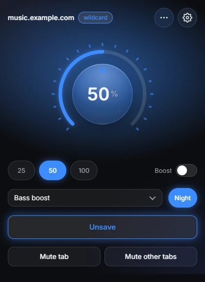

Volume Lock: per-site volume, boost and equalizer for Chrome
A volume knob that remembers every site.
Every site handles volume differently, and half of them fight you if you try to fix it from the OS mixer. Some clamp it, some remember nothing between visits, some route audio through a custom player that ignores the system slider entirely.
Volume Lock started as Simple Volume Saver, a one-screen slider that saved a level per site. It is now a full extension: a rotary knob in the popup, levels that apply at document_start so there is no loud first second, boost up to 600%, a five-band equalizer, a night mode, autoplay blocking and an options page. Saved levels live in chrome.storage.sync and follow you across signed-in devices. It makes no network requests.
Install it from the Chrome Web Store.
The popup

The knob takes drag, the mouse wheel and the keyboard, and Shift gives 1% steps. Three presets cover the common levels, and the ring around the knob shows the tab's live audio. Saving stores the level for the whole domain as a wildcard, so example.com also covers music.example.com. On a saved site the knob keeps the stored level up to date.
Which level wins
A page can have an exact-URL level, a domain level, a default level or a rule that says never touch it. The order is fixed: an excluded site beats everything, an exact origin beats a wildcard, and a wildcard beats the default.
Taking over the page's volume
Setting media.volume from an extension is the easy part. Players read it back, write it again and fight you. So a script in the page's own world virtualizes the volume property: the page reads back the value it wrote, while the real level is ours. When the level changes from the extension, the page's own slider moves with it, which is how YouTube's slider follows the knob. It also covers new Audio() elements that never enter the DOM and closed shadow roots.
Boost without clipping
Above 100% the signal goes through a Web Audio gain node, and a limiter keeps loud peaks from distorting. The nodes in the chain exist and are wired only while they have a job, so a site with no boost and no equalizer is not routed through an audio graph at all. The equalizer, the leveler for night mode and the mono and balance settings use the same chain.
Plain media can be routed through Web Audio once the page is allowed to start audio. Media the page cannot reach, such as another origin without CORS or protected media, cannot be boosted in the page. For those the extension falls back to chrome.tabCapture, which taps the tab's final output instead. It starts when the popup is opened on that tab.
Permissions
| permission | why |
|---|---|
| storage | Saved levels, rules and settings |
| tabs | Reads the active tab's URL, mutes tabs, updates the badge |
| scripting | Injects the scripts into tabs that were open at install or update |
| tabCapture, offscreen | The level ring and the boost fallback; audio is analyzed in memory and played back |
| <all_urls> | Applies a saved level before media starts, on any site |
The extension has a privacy policy and a support page, both on this site.
Testing
81 Playwright tests load the built extension into Chromium and run it against local pages with media: apply at document_start, media added later, detached elements, shadow DOM, iframes, boost, the knob, the options page, the badge, shortcuts, and the capture and offscreen lifecycle. No network access is needed.
Limits
Cross-origin media without CORS and DRM media can only be boosted after the popup is opened on that tab, and the DRM case has not been verified. Audio contexts created before the extension was injected need a page reload. Nothing works on chrome:// pages or the Chrome Web Store.
Why it stayed
It is the kind of tool I actually reach for every day, which is more than I can say for most of what I've shipped. That is why a one-screen slider grew into this.